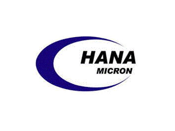

하나마이크론 Hana Micron
하나마이크론(Hana Micron)은 대한민국의 반도체 패키징 및 테스트 전문 기업으로, 아산시에 본사를 둔 반도체 후공정 사업자이다. 다양한 패키지와 모듈 공정을 다룬다.
최종 업데이트

하나마이크론은 어떤 브랜드인가
하나마이크론은 Flip Chip, Wafer Level Package(WLP), Multichip Package(MCP) 등 여러 반도체 패키지군을 생산한다. 2012년을 테스트 사업 확장의 원년으로 삼고 테스트 장비 투자를 확대했다.
자회사를 통해 반도체 전공정 장비 부품, 패키징, 테스트, 모듈 조립과 완제품 판매 사업을 운영한다. 미국에 연구소를 두고 브라질과 베트남에 법인을 설립해 해외 생산 기반을 구축했다.
2025년 기준 Global OSAT 8위 기업이며, 패키징부터 모듈 테스트까지 이어지는 Full Turn-Key 공정을 수행한다.
하나마이크론은 어떻게 시작되고 성장했나
2001년 8월 삼성전자 반도체 부문에서 분사해 설립했으며, 삼성반도체 관리이사와 지원실장을 지낸 최창호가 약 60명의 임직원을 이끌었다. 2007년 자회사 하나 실리콘을 설립해 반도체 전공정 장비용 Cathode와 Ring 사업에 진출했다.
2009년 브라질에 합작회사 HT Micron을 설립하고 현지 반도체 조립·공급 사업을 시작했다. 2023년 베트남 박장성에서 준공식을 열었으며 다음 해 매출 1조를 달성했다.
하나마이크론의 브랜드 아이덴티티는 무엇인가
반도체 패키징과 테스트뿐 아니라 모듈 조립과 모듈 테스트까지 연결하는 Full Turn-Key 공정 역량이 구분점이다.
하나마이크론의 대표 제품과 서비스는 무엇인가
주요 패키지 제품군은 Flip Chip, Wafer Level Package(WLP), Multichip Package(MCP)로 구성한다. 하나더블유엘에스는 범프와 테스트를, 하나마이크론 베트남은 반도체 패키징과 테스트를 담당한다.
하나마이크론 비나는 패키징·테스트와 모듈 조립·테스트를 수행하며, 하나일렉트로닉스는 모듈 조립·테스트와 완제품 판매를 담당한다. 하나 실리콘은 Cathode와 Ring을 공급하고, HT Micron은 브라질에서 DRAM과 Flash 메모리 등을 조립해 공급한다.
하나마이크론은 지금 어떤 상태인가
2024년 기준 외국인 지분율은 12.1%이며, 최창호 외 8인이 주요 주주로서 27.92%를 보유한다. 같은 해 삼성전자의 신규 모바일 AP용 패키지 테스트 수요에 대응하는 생산능력 증설과 차입금 상환을 위해 유상증자를 실시했다.
연결 자회사인 하나머티리얼즈의 지분 32.04%를 보유한다.
하나마이크론 로고는 어떻게 변해왔나
자주 묻는 질문
하나마이크론는 어느 나라 브랜드인가요?
하나마이크론는 한국의 기술·전자 브랜드입니다.
하나마이크론는 언제 설립되었나요?
하나마이크론는 2001년 설립되었습니다.
하나마이크론의 브랜드 아이덴티티는 무엇인가요?
반도체 패키징과 테스트뿐 아니라 모듈 조립과 모듈 테스트까지 연결하는 Full Turn-Key 공정 역량이 구분점이다.
하나마이크론의 대표 제품은 무엇인가요?
주요 패키지 제품군은 Flip Chip, Wafer Level Package(WLP), Multichip Package(MCP)로 구성한다.
하나마이크론는 현재 어떤 상태인가요?
2024년 기준 외국인 지분율은 12.1%이며, 최창호 외 8인이 주요 주주로서 27.92%를 보유한다.
하나마이크론의 본사는 어디에 있나요?
하나마이크론의 본사는 아산시에 있습니다(위키데이터 기준).
하나마이크론의 공식 웹사이트는 어디인가요?
하나마이크론의 공식 웹사이트는 http://hanamicron.com 입니다.
출처와 검증
하나마이크론 관련 참고: 공식 웹사이트 · 위키데이터 Q17020584 · 한국어 위키백과 · 영어 위키백과. 브랜드명은 한글과 원어를 함께 표기하되 데이터에 없는 표기는 만들지 않습니다. 기원 국가·설립연도는 검수된 정의문에서 확인된 값을 우선하고, 없을 때만 공식 웹사이트 URL이 일치하는 위키데이터 개체의 값을 씁니다. 위키데이터 값은 2026-09-20 기준입니다.